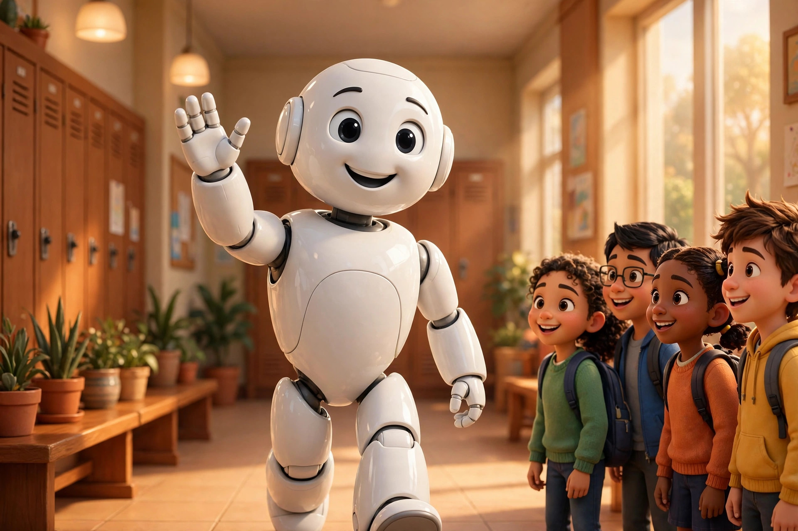

Unit 5 · Inventions — Lesson 2: Grammar & Reading · Grade 10 · Extra Class (B1+–B2)
Use gerunds:
• after verbs such as avoid, enjoy and finish:
I enjoy cooking. · She finished doing her project.
• as subjects of sentences:
Learning English is fun. · Using robots can help people.
Use to-infinitives:
• after verbs such as want, decide and allow:
My parents don't allow me to use a smartphone. · I decided to study computer science.
• after adjectives, starting with It's …:
It's fun to learn English. · It is convenient to study with apps.
• as subjects of sentences:
To learn English is fun.
💛 Both forms! Some verbs, such as like, love and hate, can be followed by EITHER a gerund OR a to-infinitive:
• I like playing computer games. = I like to play computer games.
Last Saturday, Mai and Tuan's class visited the Hall of Artificial Intelligence at the City Science Centre. At the door, a friendly robot named Aiko welcomed them. Aiko looked almost human: she could recognise students' faces, speak human languages and even show emotions, like the famous robot Sophia. “Robots are just one example of Artificial Intelligence — the study and development of machines that can copy human intelligence,” Aiko explained. “Nowadays, AI has been applied to various areas of life.”
First, the class stopped at the History Corner. In 2000, Asimo, a robot created by Honda, amazed everyone by just walking down the stairs. Twenty years later, robots like Sophia can communicate with people by using human language and expressing emotions. Then, in the Home Zone, the students watched an AI vacuum cleaner at work. At home, devices such as vacuum cleaners can now use AI to measure the room size and recognise any furniture, and then decide on the most effective way to clean the house. In transport, AI can be used on many smartphones to collect information about traffic, which helps drivers find the most suitable route. Travelling has become much more convenient thanks to AI.
Finally, in the Work Zone, a chatbot helped a customer plan a holiday, book flights and hotels, and answer questions. Before leaving, Mai asked Aiko: “Will AI replace teachers one day?” Aiko smiled: “No. AI only helps people — and people created AI.” At the end of the visit, the class agreed with their teacher: AI is one of the most important inventions of the 21st century. It has completely changed our daily work and life.
PART 1 — Complete the form: YOUNG INVENTORS CLUB
PART 2 — True or False?

Useful expressions: … help(s) / allow(s) us to do sth. · We / People can use sth to do sth / for sth. · … is / are used for sth / doing sth. · I have used it since… / I use it every day. · In my opinion, it is very important because…
Today I will talk about chatbots. A chatbot is a computer programme that talks to people online and answers their questions. People can use chatbots to plan holidays, book flights and hotels, and learn new words. Chatbots help us to save time because they answer immediately, day and night. I have used a chatbot since last year. I use it every evening to look up new English words and check my grammar. In my opinion, chatbots are very important in modern life. I like using them, but I never copy their answers — I do my homework myself first!
Sentence starters: Artificial Intelligence (AI) is one of the most important inventions of the 21st century. · Firstly, at home, AI helps us to… · For example, vacuum cleaners can… · Secondly, in transport / at work, AI allows people to… · As a result, … · In conclusion, AI is very useful because…
Useful language: artificial intelligence · robot · chatbot · vacuum cleaner · device · convenient · suitable · valuable · help / allow us to… · is used for…
Artificial Intelligence (AI) is one of the most important inventions of the 21st century. Firstly, at home, AI helps us to do housework quickly. For example, vacuum cleaners with AI can measure the room size and recognise furniture, so cleaning the house becomes much easier. Secondly, in transport and at work, AI allows people to save time. AI on smartphones collects traffic information and helps drivers to find the most suitable route, while chatbots answer customers' questions and help them book flights and hotels. In conclusion, AI is a very valuable invention because it makes our daily work and life more convenient.
Take a photo/screenshot of your report card and send it to your teacher!
| Part | Score |
|---|---|
| Warmer game (Lesson 1) | – |
| Vocabulary — Matching | – |
| Vocabulary — Gap-fill | – |
| Grammar check | – |
| Video check — Order the events | – |
| Video check — True / False | – |
| Reading | – |
| Listening — Form completion | – |
| Listening — True / False | – |
| Homework A — Vocabulary | – |
| Homework B — Gerunds & to-infinitives | – |
| Homework C — The story | – |